워드프로세서-(구-1급) (2002-11-24 기출문제)
1과목: 워드프로세싱 일반
1. 다음 중 기억장치에 대한 설명으로 옳지 않은 것은?
- SRAM은 재충전이 필요 없고 액세스 속도가 빨라 캐시 메모리로 많이 사용된다.
- PC에서 BIOS 정보나 자체 진단 프로그램 등을 저장하기 위해 DRAM을 사용한다.
- RAM에 저장된 정보의 위치는 주소로 구분한다.
- SRAM은 전원이 차단되면 기억된 내용이 지워지는 휘발성 메모리이다.
(정답률: 60%)

2. 다음의 내용은 무엇에 대한 설명인가?
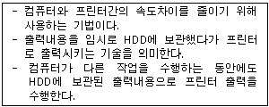
- 프린터 스풀러(Printer Spooler)
- PCL(Printing Control Language)
- 포스트 스크립트(Post Script)
- 페이지 피드(Page Feed)
(정답률: 80%)
3. 다음 중 검색(찾기)과 치환(바꾸기) 기능에 대한 설명으로 옳지 않은 것은?
- 검색은 문서의 내용 중 특정 문자나 단어, 문자열 등을 찾는 기능이다.
- 치환을 하면 문서의 내용이나 분량에 변화가 생기지 않는다.
- 치환 기능을 이용하여 특수 문자로 변환할 수 있다.
- 검색은 문서 내용을 변화시키지 않는다.
(정답률: 75%)
4. <보기1>과 같이 작성된 문서를 <보기2>와 같이 편집하고자할 경우 가장 효율적인 기능은?
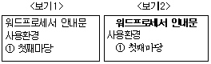
- 스타일(Style)
- 상용구(Glossary)
- 매크로(Macro)
- 자동 리피팅(Auto Repeating)
(정답률: 78%)
5. 다음 중 유니코드의 설명으로 옳지 않은 것은?
- 한글 모두를 가나다순으로 정렬하였다.
- 영문자도 2바이트로 처리한다.
- 전세계에서 사용하는 거의 모든 문자의 표현이 가능한 국제 표준코드이다.
- 정보교환시 충돌이 발생하여 정보교환용보다는 정보처리용으로 사용된다.
(정답률: 66%)
6. 눈금자에 표시되는 내용과 관련이 없는 것은?
- 탭 설정 상태
- 왼쪽, 오른쪽 여백
- 들여쓰기 설정상태
- 머리말 설정상태
(정답률: 67%)
7. 다음 중 워드프로세서로 처리할 수 있는 기능이 아닌 것은?
- 문자나 그림 등을 입력하는 문서 작성 기능
- 작성한 문서를 수정하는 편집 기능
- 작성한 문서를 메일 또는 팩스로 전송하는 통신기능
- 그림이나 사진을 스캔하여 처리하는 이미지 편집 기능
(정답률: 63%)
8. 다음 중 글꼴(Font)에 대한 설명으로 옳지 않은 것은?
- 비트맵(Bitmap) 글꼴은 점의 조합으로 표시되며 확대하면 계단현상이 발생한다.
- 외곽선(Outline) 글꼴은 확대해도 외곽선이 매끄럽게 처리된다.
- 오픈타입(Open Type) 글꼴은 기본적으로 비트맵 형식이다.
- 트루타입(True Type) 글꼴은 확대해도 글자가 매끄럽게 처리된다.
(정답률: 67%)
9. 다음 중 문단 여백과 편집 용지 여백에 대한 설명으로 옳지 않은 것은?
- 편집 용지 여백을 주면 실제로 글이 입력되는 부분은 이 편집 용지 여백을 제외한 부분부터 시작된다.
- 문단 여백이란 편집 용지 여백을 제외하고 또 다시 여백을 주는 것을 의미한다.
- 두문 및 미문이 인쇄될 영역의 크기는 문단 여백에서 설정하여 준다.
- 바꾸고자 하는 문단에 커서를 두고 적절한 문단 여백을 설정하면 해당 문단의 여백만 변경된다.
(정답률: 48%)
10. 다음 중 화면 표시형식에서 그래픽 표시방식에 대한 설명으로 옳지 않은 것은?
- 화면 표시속도가 텍스트 방식보다 빠르다.
- 문자나 도형을 픽셀(Pixel)의 집합으로 표시한다.
- 화면에 표현된 그대로를 출력결과로 얻을 수 있는 WYSIWYG 기능이 가능하다.
- 글자체가 다양하며 섬세하나 기억공간을 많이 차지한다.
(정답률: 53%)
11. 다음 중 문서를 편집할 때 특정위치를 홈(Home)으로 지정하고, 임의의 위치에서 곧바로 홈으로 커서를 이동시킬 수 있는 기능은?
- 폼 피드(Form Feed)
- 홈 베이스(Home Base)
- 자동 리피팅(Auto Repeating)
- 디스크 베이스(Disk Base)
(정답률: 75%)
12. 다음 중 편집기능에 대한 설명으로 옳지 않은 것은?
- 붙이기는 여러 번 반복 수행할 수 있다.
- 복사하기나 오려두기를 하면 블록으로 지정된 내용이 임시 기억 장소에 저장된다.
- 블록 설정 후 [Delete]키를 누르면 해당 영역이 삭제되며, 삭제된 내용은 다른 위치에 붙여넣기할 수 있다.
- 블록 설정을 해야 복사하기 또는 오려두기를 실행할 수 있다.
(정답률: 80%)
13. 다음 중에서 문서의 분량이 증가될 수 있는 교정부호들로만 구분된 것은?
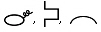
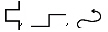
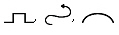
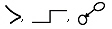
(정답률: 80%)
14. 다음과 같이 교정하였을 때의 결과로 옳은 문장은?
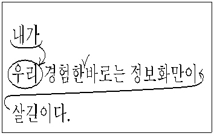
- 내가 경험한 바로는 정보화만이 살길이다.
- 내가 경험한바로는 정보화만이 살길이다.
- 내가 경험한 바로는 정보화사회만이 살길이다.
- 내가경험한 바로는 정보화만이 살길이다.
(정답률: 79%)
15. 공문서 기안용지의 서식에서 가장 윗 여백에 가까운 곳에 위치하는 항목은?
- 공개여부
- 보존기간
- 기안자
- 심사자
(정답률: 41%)
16. 다음 중 문서의 간인이 필요하지 않는 경우는?
- 법률관계의 결과가 확인된 문서
- 허가, 인가 및 등록 등에 관계되는 문서
- 전후관계를 명백히 할 필요가 있는 문서
- 사실 또는 법률관계의 증명에 관계되는 문서
(정답률: 66%)
17. 사무문서의 유통경로와 운반거리를 단축하고, 처리시간이나 기일을 정하는 것은 사무관리의 원칙 중 어느 것과 관련이 있는가?
- 정확성
- 신속성
- 용이성
- 경제성
(정답률: 81%)
18. 다음 중 전자출판(Electronic Publishing)과 거리가 먼 것은?
- 탁상출판(DTP)
- CD-ROM
- 인터넷
- 식자조판
(정답률: 54%)
19. 전자출판에서 아웃라인(Outline) 방식의 글꼴이 아닌 것은?
- 트루타입(True Type) 글꼴
- 비트맵(Bitmap) 글꼴
- 벡터(Vector) 글꼴
- 포스트 스크립트(Post Script) 글꼴
(정답률: 67%)
20. 전자출판에 사용되는 용어에 대한 설명으로 옳지 않은 것은?
- 리터칭(Retouching) ; 기존의 그림을 다른 형태로 새롭게 변형, 수정하는 작업을 의미한다.
- 오버프린트(Over Print) ; 대상체의 컬러가 배경색의 컬러보다 옅을 때에 발생하는 현상이다.
- 필터링(Filtering) ; 작성된 그림을 필터 기능을 이용하여 여러 가지 형태의 새로운 이미지로 탈바꿈시켜 주는 기능이다.
- 클립아트(Clip Art) ; 작업문서에 자주 사용되는 다양한 그림을 모아 둔 작은 그림의 모음집이다.
(정답률: 77%)
2과목: PC 운영 체제
21. 다음 중 한글 Windows 98에서 창(Window)의 사용법에 대한 설명으로 옳지 않은 것은?
- 창의 전환은 [Alt][Tab]키를 누르면 나타나는 전환창에서 적절히 선택할 수 있다.
- 창을 닫을 때는 작업표시줄 내의 종료 아이콘(
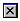
)을 클릭하거나 [Alt][F4]키를 눌러 닫는다. - 창을 최소화시키는 것은 작업표시줄 내의 아이콘이다.
- 폴더 창에서 파일의 크기를 알기 위해서는 [보기]→[자세히]를 선택한다.
(정답률: 54%)
22. 다음 중 한글 Windows 98에서 [제어판] 내의 [키보드 등록정보] 대화상자를 이용하여 설정할 수 있는 기능은?
- 키보드의 드라이버 소프트웨어를 업데이트할 수 있다.
- 키보드의 인터럽트 요청값을 수정할 수 있다.
- 키보드 자판 종류를 두벌식에서 세벌식으로 변경할 수 있다.
- 키보드의 입/출력 범위를 수정할 수 있다.
(정답률: 46%)
23. 다음 중 한글 Windows 98에서 특정 폴더나 파일에 대한 바로가기 아이콘을 만드는 방법으로 옳지 않은 것은?
- 해당 폴더나 파일의 바로가기 메뉴에서 ‘바로가기 만들기'를 선택한다.
- 해당 폴더나 파일을 선택하고 마우스 오른쪽 버튼을 누른채 드래그하여 ‘여기에 바로가기 만들기'를 선택한다.
- 해당 폴더를 선택하고 [Shift] 키를 누른 상태에서 드래그한다.
- 바로가기 아이콘을 복사하여 다른 폴더에 붙여넣기 한다.
(정답률: 58%)
24. 다음 중 한글 Windows 98을 부팅할 때 사용되는 단축키에 대한 설명으로 옳지 않은 것은?
- [F4] ; 이전의 도스 버전으로 부팅(Previous version of MS-DOS)
- [F5] ; 안전모드로 부팅(Safe mode)
- [F6] ; 정상 부팅(Normal)
- [Shift]＋[F8] ; 단계적 부팅(Step-by-step confirmation)
(정답률: 42%)
25. 한글 Windows 98에서 컴퓨터가 기동될 때마다 자동으로 실행되기를 원하는 응용 프로그램이 있다. 어떻게 하여야 하나?
- 바탕화면에 해당 응용 프로그램의 단축 아이콘을 만들어 둔다.
- 내 컴퓨터 창에 해당 응용 프로그램의 단축 아이콘을 만들어 둔다.
- C:\windows\바탕화면 폴더에 해당 응용 프로그램의 단축 아이콘을 만들어 둔다.
- C:\windows\시작 메뉴 폴더에 해당 응용 프로그램의 단축 아이콘을 만들어 둔다.
(정답률: 56%)
26. 한글 Windows 98에서는 오디오 CD나 Auto Run 기능이 있는 CD를 CD-ROM 드라이브에 삽입하면 자동으로 재생이 된다. 자동재생기능을 방지하는 방법으로 가장 적절한 것은?
- [Alt]키를 누른 상태에서 CD를 삽입한다.
- [Shift]키를 누른 상태에서 CD를 삽입한다.
- [Ctrl]키를 누른 상태에서 CD를 삽입한다.
- [Space bar]키를 누른 상태에서 CD를 삽입한다.
(정답률: 71%)
27. 다음 중 한글 Windows 98에서 작업표시줄의 [시작] 버튼을 선택하는 방법으로 옳지 않은 것은?
- [시작] 버튼을 마우스로 클릭한다.
- [Ctrl]＋[Esc]키를 누른다.
- 마이크로소프트 Windows 98 호환 키보드를 사용하는 경우 윈도우 로고 키를 누른다.
- [Shift]＋[Esc]키를 누른다.
(정답률: 70%)
28. 한글 Windows 98에서 [디스플레이 등록정보] 창에 있는 각 탭의 설명 및 기능으로 옳지 않은 것은?
- 배경화면 - 배경무늬를 선택할 수 있고 표시형식을 가운데, 바둑판식 배열, 늘이기로 선택할 수 있다.
- 화면배색 - 색상과 해상도를 바꿀 수 있다.
- 효과 - 바탕화면의 아이콘 변경이 가능하다.
- 설정 - 비디오 카드/드라이버 정보를 볼 수 있다.
(정답률: 41%)
29. 한글 Windows 98에서 [찾기]에 대한 설명으로 옳은 것은?
- 찾을 파일이름은 확장명도 포함된다.
- 날짜 탭의 찾을 조건은 바뀐 날짜와 만든 날짜만 제공된다.
- 파일 크기로 찾을 수 있는 옵션은 없다.
- 찾은 파일을 더블클릭하면 해당 파일이 들어있는 폴더의 창이 열린다.
(정답률: 36%)
30. 한글 Windows 98의 [폴더 옵션]에서 다른 창에서 폴더 열기를 설정하였다. 아래의 그림은 바탕화면에서 [내 컴퓨터]-[C:]-[Windows] 폴더를 차례로 열었을 때의 그림이다. 동시에 모든 창을 닫으려면 Windows 폴더 창에서 어떤 키를 누른 상태로 닫기 단추를 클릭하여야 하는가?
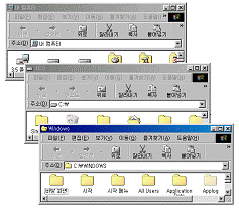
- [Alt]
- [Shift]
- [Ctrl]
- [Tab]
(정답률: 49%)
31. 한글 Windows 98에서 익스플로러를 새로 설치하려 한다. 기존의 즐겨 찾기에 넣어 두었던 많은 사이트 주소를 새로 설치하는 익스플로러에 연결하고 싶다면 어느 경로에 있는 폴더를 백업(Backup)하여 복사할 수 있도록 준비해야 하는가?
- C:\WINDOWS\APPLOG
- C:\WINDOWS\FAVORITES
- C:\WINDOWS\HISTORY
- C:\WINDOWS\RECENT
(정답률: 49%)
32. 한글 Windows 98에서 아래의 그림은 임의의 기본 프린터의 인쇄 관리자 창이다. 인쇄 관리자 창의 기능에 관한 설명으로 옳지 않은 것은?
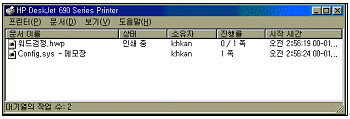
- 인쇄 목록에서 인쇄 순서를 변경할 수 있다.
- 인쇄 중인 내용을 일시 중지시킬 수 있다.
- 인쇄 중인 내용을 취소시킬 수 있다.
- 인쇄 중인 내용을 확대/축소 인쇄할 수 있다.
(정답률: 65%)
33. 한글 Windows 98의 디스크 정리 대화 상자에 관한 설명으로 가장 거리가 먼 것은?
- [시작] 메뉴의 [프로그램]-[보조프로그램]-[시스템도구]-[디스크 정리]를 실행하여 먼저 디스크 정리를 할 해당 디스크 드라이브를 선택하고 다음 작업을 수행한다.
- 디스크 정리 탭에서는 임시 인터넷 파일이나 다운 로드한 프로그램 파일 등을 제거함으로서 디스크 여유 공간을 늘릴 수 있다.
- 기타 옵션 탭에서는 사용하지 않는 Windows 구성요소나 설치된 프로그램을 제거할 수 있다.
- 설정 탭에서는 FAT16으로 디스크를 변환하여 디스크 공간을 추가 확장할 수 있다.
(정답률: 50%)
34. 한글 Windows 98에서 [제어판]의 [시스템]을 선택한 후 [장치 관리자] 탭에서 할 수 있는 작업은?
- 응용 프로그램 추가
- 하드웨어 제거
- 시동 디스크 작성
- Windows 구성 요소 설치
(정답률: 46%)
35. 한글 Windows 98의 메모장에서 저장된 문서를 열 때마다 현재의 시간과 날짜를 삽입하기 위해서 문서의 처음에 삽입하는 문자열은?
- .DATE
- .LOG
- .TIME
- .DIARY
(정답률: 60%)
36. 한글 Windows 98의 시작 프로그램 메뉴의 [보조프로그램]-[엔터테인먼트]-[볼륨 조절]을 선택하였다. 사운드와 관련된 각 장치의 설정 항목에 포함되지 않는 것은?
- 사운드 파일 열기
- 좌우 스피커 밸런스 조절
- 볼륨의 크기 조절
- 음소거
(정답률: 66%)
37. 다음 중 한글 Windows 98의 FAT32 기능에 대한 설명으로 옳지 않은 것은?
- FAT32는 2GB보다 작은 분할 영역은 지원하지 않는다.
- FAT16에 비해 FAT32를 사용하면 디스크의 여유 공간을 늘릴 수 있다.
- Windows 98에서는 하드디스크를 새로 포맷하지 않고도 FAT16에서 FAT32로 변환이 가능하다.
- FAT16에 비해 상대적으로 작은 크기의 클러스터를 사용한다.
(정답률: 39%)
38. 다음 중 한글 Windows 98에서의 네트워크 공유에 대한 설명으로 옳지 않은 것은?
- 공유된 폴더에 암호를 설정할 수 있다.
- 공유란 다른 사람들이 자신의 자료에 접근하여 사용할 수 있도록 설정해 놓은 것이다.
- 공유된 폴더에 접근 제한 인원수를 설정할 수 있다.
- 다른 사용자에게 공유 여부를 모르게 하려면 폴더나 드라이브의 공유 이름 뒤에 ‘$'를 표시하면 된다.
(정답률: 41%)
39. 한글 Windows 98에서 공유된 드라이브나 폴더의 실제 사용에 관한 방법으로 가장 거리가 먼 것은?
- 바탕화면의 [네트워크 환경]을 이용한 사용
- Windows 탐색기를 이용한 사용
- 네트워크 드라이브의 연결을 이용한 사용
- [제어판]에서 [네트워크]를 이용한 사용
(정답률: 39%)
40. 한글 Windows 98에서 인터넷을 사용할 때 IP 주소가 210.124.8.141로는 연결이 되는데 www.korcham.net 으로는 연결이 안되는 경우에 네트워크의 TCP/IP 등록정보에서 살펴보아야 할 항목은?
- WINS 구성
- 게이트웨이
- DNS 구성
- 고급
(정답률: 59%)
3과목: 컴퓨터 및 정보활용
41. 다음 중 진공관을 사용한 최초의 전자식 범용 디지털 컴퓨터는 어느 것인가?
- MARK-Ⅰ
- ENIAC
- EDVAC
- IBM 70
(정답률: 54%)
42. 다음은 무엇을 설명하고 있는가?
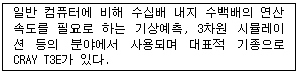
- 워크스테이션
- 아날로그 컴퓨터
- 슈퍼컴퓨터
- 랩탑 컴퓨터
(정답률: 73%)
43. 피연산자의 수에 따라 명령어 형식을 구분하였을 경우 0-주소 명령어 형식은 명령어에 피연산자가 포함되어 있지 않다. 이때 피연산자는 어디에 저장되어 있는가?
- 프로그램카운터
- 명령 레지스터
- 스택
- 큐
(정답률: 36%)
44. 다음 중 CMOS setup에서 할 수 없는 일은?
- 하드디스크 타입(Type)을 설정한다.
- 부팅 디바이스의 순서를 정한다.
- 전원 관리 모드를 설정한다.
- 사용할 운영체제의 암호를 설정한다.
(정답률: 51%)
45. 다음 중 데이터베이스 관리 시스템이 지녀야 할 특징으로 올바르게 묶은 것은?
- 중복 데이터 제어, 데이터의 고립
- 중복 데이터 제어, 프로그램과 데이터의 독립성
- 데이터의 공유 불가, 데이터의 고립
- 데이터의 공유 불가, 프로그램과 데이터의 독립성
(정답률: 62%)
46. 다음은 무엇에 대한 설명인가?
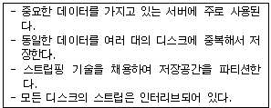
- DVD
- RAID
- Juke Box
- Jaz Drive
(정답률: 73%)
47. 다음 중 통신사업자로부터 통신 회선을 빌려 판매하는 통신망으로 패킷 교환 방식을 사용하는 통신망은?
- ISDN
- LAN
- VAN
- PSDN
(정답률: 55%)
48. 다음 중 ROM BIOS 업그레이드에 대한 설명으로 옳지 않은 것은?
- 시스템에 문제가 발생되지 않으면 최신의 BIOS로 업그레이드하지 않아도 된다.
- 일반적으로 메인보드 업체에서 제공하는 업그레이드용 유틸리티를 이용하여 업그레이드하게 된다.
- BIOS 업그레이드 중 업그레이드를 중지하기 위해서는 [Ctrl]＋[Shift]＋[Break]키를 눌러야만 된다.
- 최근에 출시된 대용량의 하드디스크를 설치하기 위해 BIOS를 업그레이드해야 할 경우가 있다.
(정답률: 53%)
49. 오디오 신호는 아날로그이므로 컴퓨터에서 사용하기 위해서는 디지털 신호로 변환해야 하며, 디지털 신호로 변환하기 위한 첫 번째 단계가 샘플링이다. 다음 중 샘플링에 대한 설명이 잘못된 것은 무엇인가?
- 소리 파형을 일정시간 간격으로 추출한 것을 샘플이라고 한다.
- 샘플링 율(Sampling Rate)이 높으면 높을수록 원음에 보다 가깝다.
- 샘플링 주파수(Sampling Frequency)는 높으면 높을수록 좋다.
- 샘플링 비트(Sampling Bit) 수는 음질에 영향을 미친다.
(정답률: 61%)
50. 다음 중 GIF 파일 형식에 대한 설명으로 옳지 않은 것은?
- 애니메이션 파일 형식으로 움직이지 않는 이미지는 나타낼 수 없다.
- 최대 256개의 색으로 제한된 이미지 압축 형식이다.
- 웹 문서에서 사용될 수 있는 형식이다.
- 비트맵 방식이다.
(정답률: 54%)
51. 중앙처리장치와 주기억장치의 처리 속도 차이를 줄이기 위해 사용되는 메모리는?
- 플래시 메모리
- 가상기억장치
- 연관기억장치
- 캐시 메모리
(정답률: 77%)
52. 정지 이미지 데이터의 압축 방식으로 사용자의 요구에 따라 압축 정도를 지정할 수 있는 방식은?
- MPEG
- IPEC
- JPEG
- APEC
(정답률: 68%)
53. TCP/IP 프로토콜에서 네트워크상의 수많은 컴퓨터를 구분하기 위하여 현재 사용하는 주소체계는 IPv4(IP version 4)를 사용하고 있다. 다음 중에서 IP주소의 부족현상을 해소하기 위한 차세대 IP주소 체계는 무엇인가?
- 64비트의 IPv4
- 128비트의 IPv4
- 64비트의 IPv6
- 128비트의 IPv6
(정답률: 50%)
54. 다음 중 인터넷 정보검색에 관한 설명으로 옳지 않은 것은?
- 키워드 검색엔진은 특정 단어 또는 검색어를 입력함으로써 원하는 정보를 찾도록 하는 검색엔진이다.
- 메타검색엔진은 로봇 에이전트를 이용해 동시에 여러 개의 검색엔진에서 정보를 찾은 다음 그 결과를 검색엔진별로 출력해주는 검색엔진이다.
- 검색어로 시작되는 모든 단어를 찾아 표시하기 위해서는 검색어 다음에 *를 사용하면 된다.
- 일반적인 검색연산자의 연산순위는 AND, OR, NOT, NEAR 순이다.
(정답률: 47%)
55. 다음 중 NCSC(미국 국립 컴퓨터보안센터)에서 규정한 보안등급 순서를 높은 수준부터 낮은 수준 순으로 올바르게 나열한 것은?
- A1 - B1 - B2 - B3 - C1 - C2 - D1
- D1 - C2 - C1 - B3 - B2 - B1 - A1
- A1 - B3 - B2 - B1 - C2 - C1 - D1
- D1 - C1 - C2 - B1 - B2 - B3 - A1
(정답률: 47%)
56. 다음 중 정보 보안 시스템에서 사용될 수 있는 인증 시스템과 가장 거리가 먼 것은?
- 홍채 인증
- 지문 인증
- 나이 인증
- 음성 인증
(정답률: 77%)
57. 다음 중 RISC 프로세서에 대한 설명으로 옳지 않은 것은?
- 단순 기능의 명령어 집합을 사용하며, CISC 프로세서보다 명령어 수가 적다.
- 다양한 크기의 명령어를 사용한다.
- 일반적으로 CISC 프로세서보다 더 많은 레지스터 세트를 갖는다.
- 대표적인 프로세서에는 SPARC, Alpha가 있다.
(정답률: 37%)
58. 오디오, 비디오 등의 아날로그 신호를 펄스 부호 변조(PCM)를 사용하여 전송에 적합한 디지털 비트 스트림으로 압축·변환하고, 역으로 수신 측에서 디지털 신호를 아날로그 신호로 변환하는 기기 또는 장치를 무엇이라 하는가?
- 라우터(Router)
- 램덱(RAMDAC)
- 스트림(Stream)
- 코덱(CODEC)
(정답률: 65%)
59. 다음 중 웹 상에서 사용자가 임의로 만든 태그(tag)를 사용하여 구조화된 문서를 만들어 상호 교환할 수 있도록 설계된 표준언어는 무엇인가?
- VRML
- SGML
- XML
- HTML
(정답률: 49%)
60. 다음 중 TCP/IP 응용 계층에 해당하지 않는 프로토콜은?
- HTTP
- FTP
- SMTP
- SNMP
(정답률: 54%)
PC에서 BIOS 정보나 자체 진단 프로그램 등을 저장하기 위해 ROM이나 EEPROM 등의 비휘발성 메모리를 사용하는 이유는 전원이 차단되어도 내용이 지워지지 않기 때문입니다. 따라서 컴퓨터가 다시 켜졌을 때도 이 정보들을 유지할 수 있습니다.